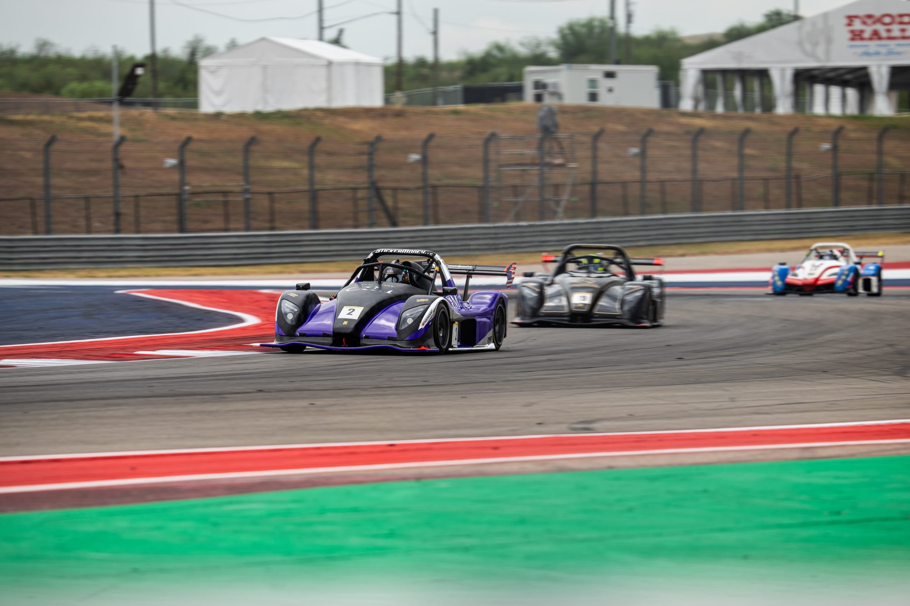
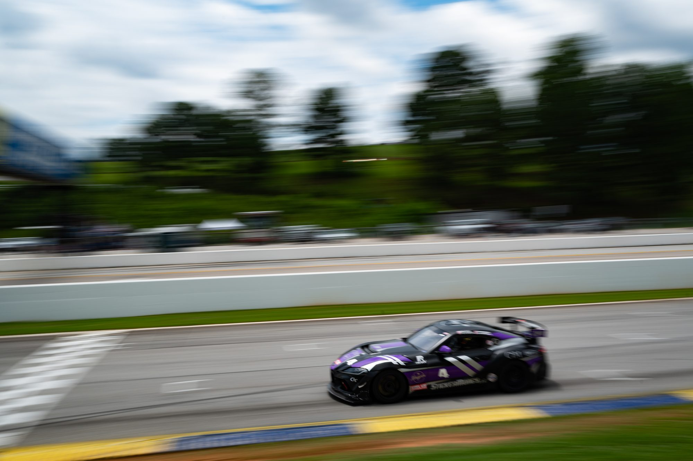

On track
Series: Radical Cup and SCCA
Two programs. Two very different ways to go fast.
Radical cars are lightweight sports prototypes built purely for the track. Think low, light and grippy, with aerodynamic downforce, racing slicks and a driver-focused cockpit. They are known for being quick, rewarding and relatively accessible, which makes them a great platform for racing hard and learning fast.
What to expect:

Series: Radical Cup and SCCA

Series: Radical Cup and SCCA
| Model | Radical SR3 |
|---|---|
| Cars | #2 and #418 (1500cc) · #48 (1340cc) |
| Engine | Radical RPE (Suzuki-based) inline 4-cylinder, 1500cc or 1340cc |
| Power | approx. 230 hp (1500cc) · approx. 195–220 hp (1340cc) |
| Weight | approx. 620 kg (1,365 lb) |
| Transmission | 6-speed sequential, paddle shift |
| Tyres | Racing slicks |
| Livery | Purple, black and chrome |
| Driver(s) | [TBD] |
| Series | Radical Cup and SCCA |
GT4 is a class of race cars developed from road-going sports cars. They keep the recognisable shape of the original but add race safety equipment, race suspension, brakes and tyres, and aero. Classes like this usually use performance balancing to keep different makes competitive, so it is as much about race craft and team work as outright speed.
What to expect:

Series: World Racing League (WRL)

Series: World Racing League (WRL)
| Model | Toyota GR Supra GT4 |
|---|---|
| Car number | #4 |
| Engine | B58 3.0-litre twin-scroll turbo inline 6-cylinder |
| Power | approx. 430 hp (set by the series' Balance of Performance) |
| Weight | approx. 1,350 kg (2,976 lb) |
| Transmission | 7-speed sequential, paddle shift, mechanical limited-slip diff |
| Tyres | Racing slicks |
| Livery | Purple, black and chrome |
| Driver(s) | [TBD] |
| Series | World Racing League (WRL) |
Specs are typical published figures for these cars; exact numbers vary with model year, setup and series rules.